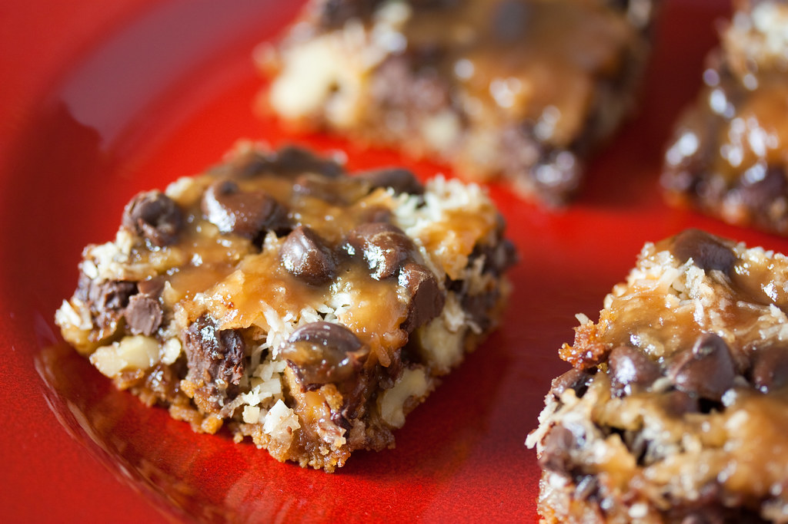

Seven Layer Bar
Back to Home Page

Description
These 7 layer bars are easy to make, and very rich.
You can use different kinds of chips (vanilla or peanut butter)
to suit your taste.
Ingredients
- 1/2 cup of unsalted butter
- 1 1/2 cups graham cracker crumbs
- 1 cup semisweet chocolate chips
- 1 cup butterscotch chips
- 1 cup chopped walnuts
- 1 (14 ounce) can sweetened condensed milk
- 1 1/3 cups shredded coconut
Steps
- Preheat the oven to 350 degrees F (175 degrees C).
- Put butter in 13x9-inch baking pan and place in oven until melted.
Swirl to coat bottom and sides with butter.
- Spread graham cracker crumbs evenly over bottom of pan.
Layer chocolate chips, butterscotch chips, and walnuts over crumbs.
Pour condensed milk over walnuts and sprinkle with coconut.
- Bake in preheated oven until edges are golden brown, about 25 minutes.
- Cool and cut into 36 bars.